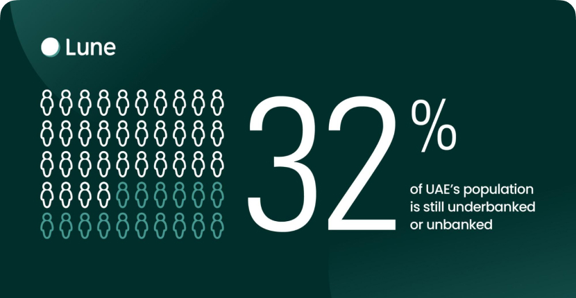

Unlocking Financial Inclusion for UAE's Underserved Population
We're excited to announce that Lune Technologies has teamed up with the National Bank of Fujairah (NBF).
Published on

What is Financial Inclusion and Why Does it Matter?
Picture a society where financial services are accessible to everyone, particularly those from underserved populations. Financial inclusion makes this vision a reality, ensuring that each person, irrespective of their financial situation, can tap into everyday banking services.
The beauty of financial inclusion lies in its potential to unlock opportunities. By providing access to essential financial tools and resources, it empowers individuals to take charge of their finances, save for what's ahead, and invest in their aspirations. This approach ignites a ripple effect of benefits, resulting in a thriving economy.
The true impact of financial inclusion is captured through the inspiring stories of single parents securing loans to kickstart small businesses or low-income workers gaining access to insurance for the first time.
In the United Arab Emirates, an estimated 32% of the population is underbanked or unbanked, highlighting the need for innovative solutions to bridge the financial inclusion gap.
The Current Status of Financial Inclusion in the UAE
In the United Arab Emirates, an estimated 32% of the population is underbanked or unbanked, highlighting the need for innovative solutions to bridge the financial inclusion gap.
Fintech companies are stepping up to address this challenge by offering accessible and affordable financial services tailored to the unique needs of these underserved communities.
Impactful Fintech Initiatives in the UAE
The UAE's fintech landscape is home to numerous companies championing financial inclusion through groundbreaking products and services. Let's explore a few of these remarkable initiatives:
1) Now Money: This company provides low-income migrant workers with access to digital bank accounts, enabling them to receive their salaries, make payments, and transfer money to their families back home, all through a simple mobile app.
2) Rise: Aiming to serve low-income migrant workers, Rise offers an app-based platform that provides financial services like remittances, insurance, and investments. Rise's mission is to help users save money, grow their wealth, and create a better future.
3) Aafaq Islamic Finance: With a focus on Sharia-compliant financial solutions, Aafaq Islamic Finance offers a range of services, including personal finance, business finance, and digital payments, to cater to the needs of underserved communities in the UAE.
Lune's Contribution to Financial Inclusivity
Lune is playing a pivotal role in promoting financial inclusion in the UAE by offering its API solutions to financial institutions and fintech companies.
These solutions enable organizations to better understand their customers' financial behavior and tailor their products and services to the unique needs of underserved communities.
By leveraging Lune Data's API solutions, financial institutions can more effectively identify patterns and habits among the underbanked population.
These insights can help financial institutions understand their specific needs and get a sense of the challenges they go through, like:
- Getting affordable credit
- Finding easy-to-use savings options
- Using handy budgeting tools to manage their money
The Future of Financial Inclusion in the UAE
As the UAE's fintech ecosystem expands, creative solutions are emerging to address the financial needs of the underbanked
These cutting-edge technologies are enabling more people to access essential banking services, fostering financial inclusion, and breaking down barriers to financial prosperity.
The collaborative efforts of fintech companies, financial institutions, and government initiatives are creating a more inclusive financial environment in the UAE. By prioritizing accessibility, affordability, and financial literacy, these stakeholders are not only bridging the financial inclusion gap but also contributing to a brighter, more prosperous future for everyone in the UAE.
Are you ready to take part in this financial revolution? Learn more about Lune and discover how you can join the movement towards a more inclusive financial landscape.